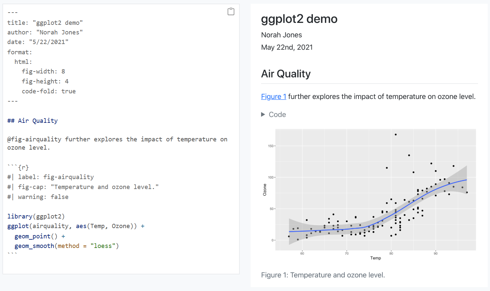

Code
1 + 1[1] 2Quarto & LaTeX
Instructor: Dongeun Kim

This document will provide you a brief introduction to using Quarto and LaTeX to improve your reports and presentation of your data analyses.
Quarto is an authoring system (built on Pandoc) for multi-format documents; LaTeX is a typesetting language/engine for high-quality PDFs.
When you publish your work to PDF in Quarto, it converts your .qmd → LaTeX → PDF using a TeX engine (e.g., pdflatex, xelatex, or lualatex).
If you’re only targeting HTML output, then you don’t need LaTeX installed at all, but you can still write math equations in Quarto using LaTeX syntax (e.g., $y = mx + b$ -> \(y = mx + b\)).

Quarto is an open-source, multi-language, next-generation version of R Markdown from Posit.
You can author in RStudio, Jupyter Notebook, VS Code, Positron, Neovim, plain text editors, or the Visual Editor, and embed executable code in R, Python, Julia, and Observable to create dynamic, reproducible content.
Like R Markdown, Quarto uses knitr to run R code and can render most existing .Rmd files without modification.
From a single source, you can publish production-quality work to HTML, PDF, MS Word, ePub and more, including: - Articles, presentations, dashboards, websites, blogs, and books - Documents complete with equations, citations, cross-references, figure panels, callouts, and advanced layouts
Quarto also supports organization-wide publishing via Posit Connect, Confluence, and other systems.
Markdown: Markdown is a text-to-HTML conversion tool for web writers. It lets you write in an easy-to-read, easy-to-write plain-text format, then convert it to structurally valid HTML.
R Markdown: R Markdown is a file format (.Rmd) for making dynamic documents with R. An R Markdown document is written in markdown (plain text) and contains chunks of embedded R code.
There are a wide variety of ways to publish documents, presentations, and websites created using Quarto. Since content rendered with Quarto uses standard formats (HTML, PDFs, MS Word, etc.) it can be published anywhere. Additionally, there is a quarto publish command available for easy publishing to various popular services (GitHub, Netlify, Posit Connect, etc.) as well as various tools to make it easy to publish from a Continuous Integration (CI) system.
Quarto is based on Pandoc and uses its variation of markdown as its underlying document syntax. Pandoc markdown is an extended and slightly revised version of John Gruber’s Markdown syntax.
Markdown is a plain text format that is designed to be easy to write, and, even more importantly, easy to read.
This document provides examples of the most commonly used markdown syntax. See the full documentation of Pandoc’s Markdown for more in-depth documentation (https://pandoc.org/MANUAL.html#pandocs-markdown).
*italics*, **bold**, ***bold italics***superscript^2^ / subscript~2~~~strikethrough~~`verbatim code`verbatim code
# Heading 1## Heading 2### Heading 3#### Heading 4##### Heading 5###### Heading 6<https://xingyuanzhao-project.github.io/MathandCodingCamp/>[UTDEPPSBootcamp](https://xingyuanzhao-project.github.io/MathandCodingCamp/)* unordered list
+ sub-item 1
+ sub-item 2
- sub-sub-item 1* item 2
Continueditem 2
Continued
1. ordered list
2. item 2
i) sub-item 1
A. sub-sub-item 1- [ ] Task 1
- [x] Task 2(@) A list whose numbering
continues after
(@) an interruptionA list whose numbering
continues after
an interruption
::: {}
1. A list
:::
::: {}
1. Followed by another list
:::term
: definitionNote that unlike other Markdown renderers (notably Jupyter and GitHub), lists in Quarto require an entire blank line above the list. Otherwise the list will not be rendered in list form, rather it will all appear as normal text along a single line.
| Right | Left | Default | Center |
|------:|:-----|---------|:------:|
| 12 | 12 | 12 | 12 |
| 123 | 123 | 123 | 123 |
| 1 | 1 | 1 | 1 || Right | Left | Default | Center |
|---|---|---|---|
| 12 | 12 | 12 | 12 |
| 123 | 123 | 123 | 123 |
Learn more in the article on https://quarto.org/docs/authoring/tables.html.
Place your code on the line immediately after the opening chunk header (```{r}) and before the closing triple backticks (```).
1 + 1[1] 2# Load necessary packages and data
# install.packages("MASS")
library(MASS)
data("Boston")
# Display the first few rows of the dataset
head(Boston) crim zn indus chas nox rm age dis rad tax ptratio black lstat
1 0.00632 18 2.31 0 0.538 6.575 65.2 4.0900 1 296 15.3 396.90 4.98
2 0.02731 0 7.07 0 0.469 6.421 78.9 4.9671 2 242 17.8 396.90 9.14
3 0.02729 0 7.07 0 0.469 7.185 61.1 4.9671 2 242 17.8 392.83 4.03
4 0.03237 0 2.18 0 0.458 6.998 45.8 6.0622 3 222 18.7 394.63 2.94
5 0.06905 0 2.18 0 0.458 7.147 54.2 6.0622 3 222 18.7 396.90 5.33
6 0.02985 0 2.18 0 0.458 6.430 58.7 6.0622 3 222 18.7 394.12 5.21
medv
1 24.0
2 21.6
3 34.7
4 33.4
5 36.2
6 28.7summary(Boston) crim zn indus chas
Min. : 0.00632 Min. : 0.00 Min. : 0.46 Min. :0.00000
1st Qu.: 0.08205 1st Qu.: 0.00 1st Qu.: 5.19 1st Qu.:0.00000
Median : 0.25651 Median : 0.00 Median : 9.69 Median :0.00000
Mean : 3.61352 Mean : 11.36 Mean :11.14 Mean :0.06917
3rd Qu.: 3.67708 3rd Qu.: 12.50 3rd Qu.:18.10 3rd Qu.:0.00000
Max. :88.97620 Max. :100.00 Max. :27.74 Max. :1.00000
nox rm age dis
Min. :0.3850 Min. :3.561 Min. : 2.90 Min. : 1.130
1st Qu.:0.4490 1st Qu.:5.886 1st Qu.: 45.02 1st Qu.: 2.100
Median :0.5380 Median :6.208 Median : 77.50 Median : 3.207
Mean :0.5547 Mean :6.285 Mean : 68.57 Mean : 3.795
3rd Qu.:0.6240 3rd Qu.:6.623 3rd Qu.: 94.08 3rd Qu.: 5.188
Max. :0.8710 Max. :8.780 Max. :100.00 Max. :12.127
rad tax ptratio black
Min. : 1.000 Min. :187.0 Min. :12.60 Min. : 0.32
1st Qu.: 4.000 1st Qu.:279.0 1st Qu.:17.40 1st Qu.:375.38
Median : 5.000 Median :330.0 Median :19.05 Median :391.44
Mean : 9.549 Mean :408.2 Mean :18.46 Mean :356.67
3rd Qu.:24.000 3rd Qu.:666.0 3rd Qu.:20.20 3rd Qu.:396.23
Max. :24.000 Max. :711.0 Max. :22.00 Max. :396.90
lstat medv
Min. : 1.73 Min. : 5.00
1st Qu.: 6.95 1st Qu.:17.02
Median :11.36 Median :21.20
Mean :12.65 Mean :22.53
3rd Qu.:16.95 3rd Qu.:25.00
Max. :37.97 Max. :50.00 inline math: $E = mc^{2}$display math:
$$E = mc^{2}$$display math:
\[E = mc^{2}\]LaTeX is a high-quality typesetting system that is widely used for producing scientific and mathematical documents. It is especially useful when your report includes complex equations, tables, and citations.
While Quarto is excellent for combining code and text, LaTeX is the go-to tool when you want full control over formatting in academic writing, especially for papers with complex equations.
It is a language for writing math and science cleanly. In Quarto, we use LaTeX syntax between $...$ (inline) or $$...$$ (display) to typeset equations; HTML needs no extra setup, and PDF uses a LaTeX engine behind the scenes.
Inline: $E = mc^2$
Display:
$$
E = mc^2
$$Inline: \(E = mc^2\)
Display: \[ E = mc^2 \]
Fractions/square roots: $\frac{a+b}{c}$, $\sqrt{x}$, $\sqrt[n]{x}$
Superscripts/subscripts: $x_i^2$, $\hat\beta$
Greek letters: $\alpha,\beta,\gamma,\pi,\Sigma,\Omega$
Functions/ops: $\sin x,\ \log x,\ \sum_{i=1}^n i,\ \int_0^1 x^2\,dx$
Vectors/matrices: $\mathbf{x},\ \vec{v},\ X^\top$Fractions/square roots: \(\frac{a+b}{c}\), \(\sqrt{x}\), \(\sqrt[n]{x}\)
Superscripts/subscripts: \(x_i^2\), \(\hat\beta\)
Greek letters: \(\alpha,\beta,\gamma,\pi,\Sigma,\Omega\)
Functions/ops: \(\sin x,\ \log x,\ \sum_{i=1}^n i,\ \int_0^1 x^2\,dx\)
Vectors/matrices: \(\mathbf{x},\ \vec{v},\ X^\top\)
$$
\begin{aligned}
y &= \beta_0 + \beta_1 x + \varepsilon \\
\hat\beta &= (X^\top X)^{-1} X^\top y
\end{aligned}
$$\[ \begin{aligned} y &= \beta_0 + \beta_1 x + \varepsilon \\ \hat\beta &= (X^\top X)^{-1} X^\top y \end{aligned} \]
$$
A=\begin{bmatrix} 1 & 0 \\ 0 & 1 \end{bmatrix}
\qquad
f(x)=\begin{cases}
x^2, & x\ge 0\\
-x, & \text{otherwise}
\end{cases}
$$\[ A=\begin{bmatrix} 1 & 0 \\ 0 & 1 \end{bmatrix} \qquad f(x)=\begin{cases} x^2, & x\ge 0\\ -x, & \text{otherwise} \end{cases} \]
[Quarto] (https://quarto.org/)
[R Markdown from R Studio] (https://rmarkdown.rstudio.com/)
[The LaTeX project] (https://www.latex-project.org/)